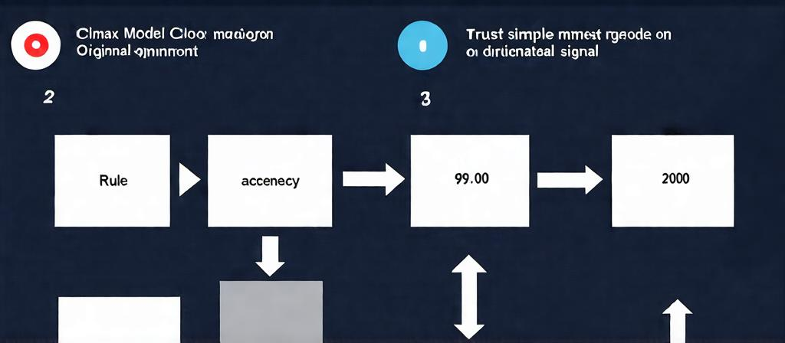

When Two Classifiers Disagree, Does the Direction Tell You Which One Is Right?
When a simple model and a complex model disagree on a prediction, intuition suggests the direction of that disagreement should tell you which one is right: simple models err toward the majority, complex models err toward noise. We tested this across 719 configurations on three sentiment datasets and found no signal at all. Both directional rules achieve 49.0% accuracy, identical to always guessing the majority class. The confidence-based baseline outperforms them by over five percentage points.
Contributions
Matched features eliminate the confound
We re-ran the disagreement asymmetry oracle with both models using the same TF-IDF word n-gram features, eliminating the word-level vs. character-level confound that invalidated the previous study.
Both directional rules perform at chance
The original and inverted rules both achieve 49.0% accuracy on disagreement samples across 719 configurations, indistinguishable from the majority-class prior.
The earlier negative result was an artifact
The original 42.4% result from the previous study was driven by comparing different feature spaces, not by the bias-variance tradeoff. It disappears when both models share features.
Confidence remains the practical default
Confidence-based selection achieves 54.3% accuracy on disagreement samples and remains the best practical approach for resolving inter-model disagreements on sentiment data.
Method
The hypothesis is straightforward: when a simple model and a complex model disagree, the pattern of their disagreement should predict which one is correct. A simple model with strong bias toward the majority class should be reliable on majority predictions; a complex model that captures minority signals should be reliable on minority predictions.

We trained two model pairs on the same data with matched TF-IDF features (word-level unigrams and bigrams, maximum 5,000 features): a simple pair (logistic regression vs. Naive Bayes) and a complex pair (random forest vs. SVM). Both models in each pair use identical feature representations.
We tested on three datasets (SST-2, IMDB, Twitter Financial News) across four sample sizes (100, 200, 500, 1000), three class imbalance ratios (1.0, 1.5, 2.0), and ten random seeds, yielding 719 completed configurations. On the test set, we identified samples where the two models disagreed and evaluated the original directional rule, the inverted rule, a confidence baseline, and a majority-class prior.
Results
Neither directional rule works. Across 652 configurations with disagreements, both the original and inverted rules achieve 49.0% accuracy, identical to the majority-class prior.
The confidence baseline outperforms both directional rules by 5.3 percentage points. The oracle baseline shows that information about which model is correct does exist on the disagreement set, but the directional rule cannot access it.
The pattern holds across all three datasets. On IMDB, the confidence baseline reaches 56.7%; on SST-2 and Twitter Financial News, it is 52.5% and 53.4%. Neither model pair shows a systematic directional signal: logistic regression vs. random forest yields 50.7% (inverted) and 46.7% (original), while Naive Bayes vs. SVM yields 47.3% (inverted) and 51.3% (original).
Of 652 configurations, 67 show raw significance at p < 0.05. After Benjamini-Hochberg correction, zero remain significant. The mean adjusted p-value is 1.0.
The previous study reported 42.4% accuracy for the original rule using unmatched features (word-level TF-IDF vs. character n-grams). With matched features, that result disappears entirely: the original rule achieves 49.0%, the inverted rule achieves 49.0%. The 42.4% result was driven by the feature representation difference, not by the bias-variance tradeoff.
Figures
Limitations
The study has several limitations the authors acknowledge:
- We test only two model pairs on three sentiment datasets. The hypothesis might hold for other model families, such as neural networks versus linear models, or in other domains where the bias-variance tradeoff manifests differently.
- The small sample sizes (100 to 1000) may not be sufficient to reveal the effect, though the effect should be strongest in small-sample regimes where the bias-variance tradeoff matters most.
- We do not test the effect of model calibration on the directional rule itself, only on the confidence baseline.
- Whether multi-model disagreement patterns, such as 2-vs-1 splits, carry more signal than binary disagreements remains an open question.